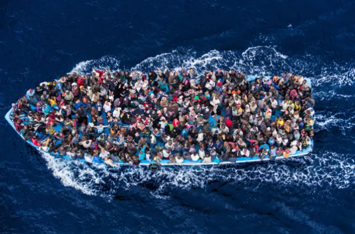

Salva la vida a otro ser humano.
Nos necesitamos.
Te necesitan.
Somos OPEN-ROAD!
Open Road se establece con la misión de proporcionar ayuda y apoyo a los refugiados en todo el mundo. Nuestra organización surgió de un profundo compromiso con los derechos humanos y la convicción de que cada individuo merece vivir con dignidad y seguridad, independientemente de su origen o circunstancias. Desde nuestros humildes comienzos como un pequeño grupo de voluntarios dedicados, hemos crecido hasta convertirnos en una red global de solidaridad, trabajando incansablemente para aliviar el sufrimiento y brindar esperanza a aquellos que han sido desplazados por conflictos, persecuciones y desastres naturales. A lo largo de los años, hemos proporcionado refugio, alimentos, atención médica, educación y apoyo emocional a innumerables individuos y familias que se han visto obligados a abandonar sus hogares en busca de seguridad. Nuestro compromiso con la justicia social y el bienestar humano continúa impulsando cada uno de nuestros esfuerzos, y estamos dedicados a seguir trabajando en pos de un mundo más justo y compasivo para todos. Únete a nosotros en nuestro viaje mientras continuamos defendiendo los derechos de los refugiados y construyendo un futuro más brillante para las generaciones venideras.
Nuestros Servicios
Asesoramiento Legal
Ofrecemos asesoramiento legal y de inmigración para refugiados que buscan establecerse en un nuevo país. Nuestro equipo de abogados especializados está aquí para guiar a los refugiados a través de los complejos procesos legales y proporcionarles el apoyo necesario para iniciar una nueva vida de manera segura y legal.
Apoyo Social y Sicologico
En Open Road, entendemos los desafíos emocionales y sociales que enfrentan los refugiados durante su proceso de adaptación. Por eso, ofrecemos servicios de apoyo psicológico y social, donde nuestros profesionales capacitados brindan terapia individual y grupal, así como orientación sobre cómo acceder a recursos comunitarios y establecer redes de apoyo.
Programas de Formación
Nuestros programas de formación y capacitación laboral están diseñados para empoderar a los refugiados y ayudarles a adquirir las habilidades necesarias para integrarse en el mercado laboral de su nuevo hogar. Ofrecemos cursos prácticos en áreas como idiomas, habilidades profesionales y emprendimiento, para que puedan construir un futuro sostenible para ellos y sus familias.
ESTADÍSTICAS(Haz clic para ver más detalles)
| Año | Número de refugiados atendidos | Número de países de operación | Detalles | |
|---|---|---|---|---|
| Programas activos | Financiamiento (en USD) | |||
| 2022 | 85,000 | 12 | 5 | $2,500,000 |
| 2023 | 92,000 | 15 | ||
| 2024* | 105,000 | 18 | ||
*Datos hasta la fecha actual (abril de 2024).